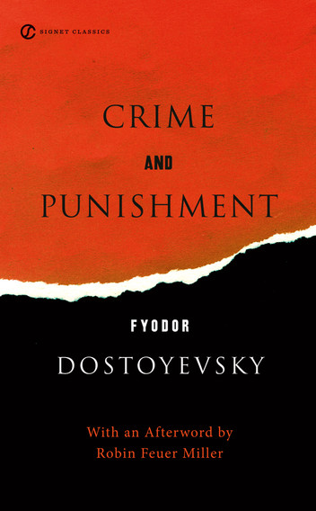
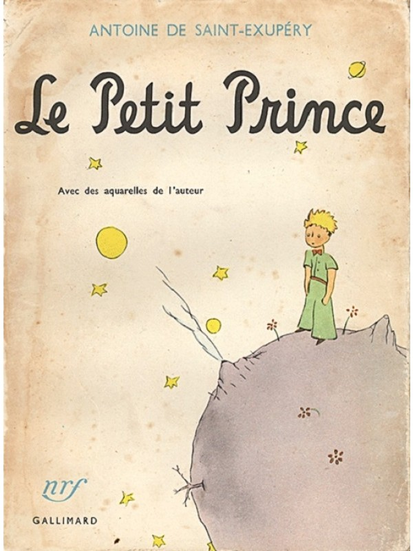
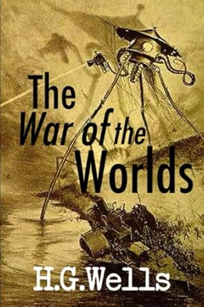

Crime and Punishment follows the mental anguish and moral dilemmas of Rodion Raskolnikov, an impoverished ex-student in Saint Petersburg who plans to kill an unscrupulous pawnbroker, an old woman who stores money and valuable objects in her flat. He theorises that with the money he could liberate himself from poverty and go on to perform great deeds, and seeks to convince himself that certain crimes are justifiable.

A pilot stranded in the desert awakes one morning to see, standing before him, the most extraordinary little fellow. "Please," asks the stranger, "draw me a sheep." And the pilot realizes that when life's events are too difficult to understand, there is no choice but to succumb to their mysteries. He pulls out pencil and paper... And thus begins this wise and enchanting fable that, in teaching the secret of what is really important in life, has changed forever the world for its readers.

When an army of invading Martians lands in England, panic and terror seize the population. As the aliens traverse the country in huge three-legged machines, incinerating all in their path with a heat ray and spreading noxious toxic gases, the people of the Earth must come to terms with the prospect of the end of human civilization and the beginning of Martian rule.